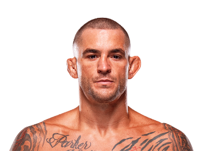

Dustin Poirier es un peleador estadounidense de artes marciales mixtas, conocido por su resiliencia, agresividad y capacidad de noquear a sus rivales con gran precisión. Nació el 19 de enero de 1989 en Lafayette, Louisiana, Estados Unidos. Desde joven se interesó por el boxeo y las artes marciales mixtas, entrenando con disciplina y pasión para convertirse en profesional.
Poirier comenzó su carrera profesional en MMA a los 18 años, destacándose por su striking fuerte y su habilidad en el suelo. Con el paso de los años, se convirtió en uno de los principales contendientes de la división de peso ligero en UFC. Su trayectoria está marcada por combates memorables, rivalidades históricas y una mentalidad de lucha inquebrantable, ganándose el respeto de fanáticos y rivales por igual.
A lo largo de su carrera, Dustin ha demostrado ser un peleador completo, capaz de adaptarse a diferentes estilos de combate. Su ética de trabajo, constancia y determinación lo han llevado a ser reconocido no solo como un campeón dentro del octágono, sino también como una de las figuras más respetadas del MMA moderno.

Dustin Poirier se caracteriza por su striking técnico y agresivo, combinado con un sólido juego de grappling. Entre sus principales características destacan:
Poirier ha tenido una carrera impresionante dentro de UFC, incluyendo:
Además de su carrera en el octágono, Dustin es un embajador de las MMA y ha creado la fundación Poirier Foundation, apoyando a comunidades desfavorecidas y contribuyendo al desarrollo social mediante el deporte.
Dustin Poirier es un ejemplo de perseverancia, disciplina y espíritu competitivo, demostrando que la combinación de talento, trabajo duro y pasión puede convertir a un peleador en una leyenda moderna del MMA.